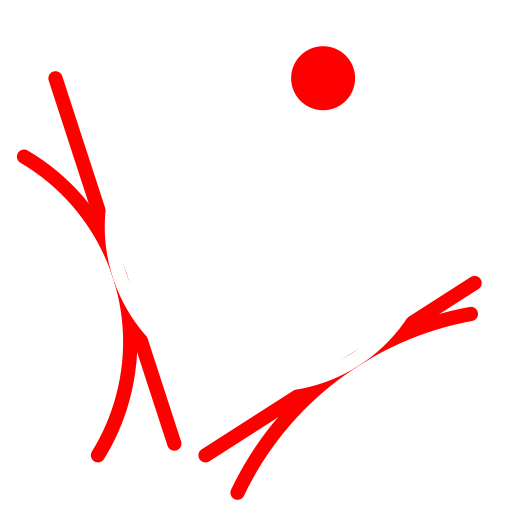

2 Tangents and Point
Toolbar / Icon:

Menu:
Draw > Circle > 2 Tangents and Point
Shortcuts:
C, P, 2, T | C, T, 2, O
Commands:
circletangent2 | ct2
Description:
Draws a circle that is tangential to two entities and goes through a point.
Procedure:
Specify the first tangential entity.
Specify the second tangential entity.
Specify the point on the circle line.